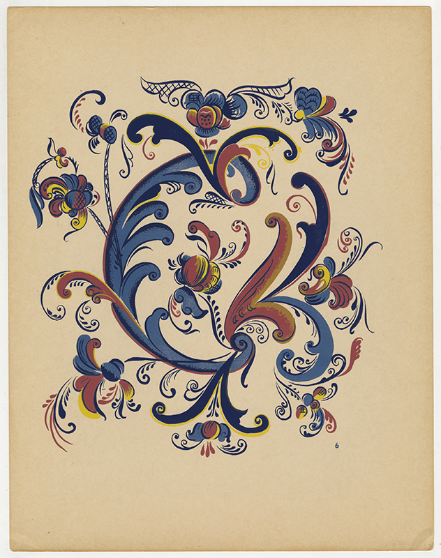

Portfolio Purpose
This site helps visitors learn more about my coding journey with HTML and CSS. It showcases my progress, classwork, and projects as I continue developing my web design skills.
Welcome
This portfolio presents my classwork, labs, reports, and projects in a professional and organized way.
Featured Work
Here you will find examples of the work I have completed this quarter, including labs, reports, and other web development projects.
Portfolio Image
